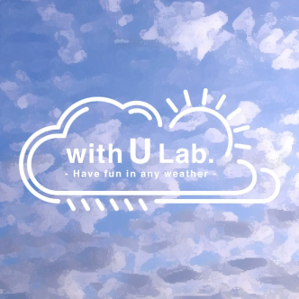
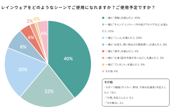
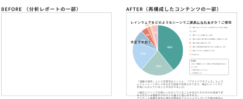

01
PROJECT & MY ROLE
ユーザーの声から、
伝わる情報へ。
ユーザーアンケートを起点としたブランドコミュニケーション
ユーザーアンケートを通して
集まった声やデータを整理し、
ブランドとユーザーのコミュニケーションに
つながるWebコンテンツとして再構成しました。

MY ROLE
複雑な調査データを整理・再構成し、ユーザーにとって読みやすく、ブランドの意図が伝わるWebコンテンツへ編集。
アンケート結果の
情報整理・ビジュアル編集
分析レポートの
再構成・デザイン
Webページのデザイン・制作
情報構成・ページ設計
表・グラフの再編集
ブランドとユーザーをつなぐ
コミュニケーション設計
♙
回答者数600名
▤
質問数17問
▣
実施期間2ヶ月
02
RESEARCH → COMMUNICATION
ユーザーの声を、伝わる情報へ。
アンケート結果の一部

重視するポイント
ユーザーの声が、次の商品へ
多くの回答データをそのまま掲載するのではなく、ユーザーが知りたい情報や重要なポイントを整理し、直感的に理解できる構成へ再編集しました。
03
TRANSLATE → COMMUNICATE
情報を整理し、伝わるストーリーへ

複雑な分析データや開発背景を、ユーザーが直感的に理解できる情報へ再構成。ブランドとユーザーのコミュニケーションをデザインしました。
情報整理
アンケート結果や開発資料を整理
理解・対話
MD・デザイナーと開発の意図を確認
編集・再構成
読みやすく、伝わる形に編集
Web制作
ブランドサイトのコンテンツ公開